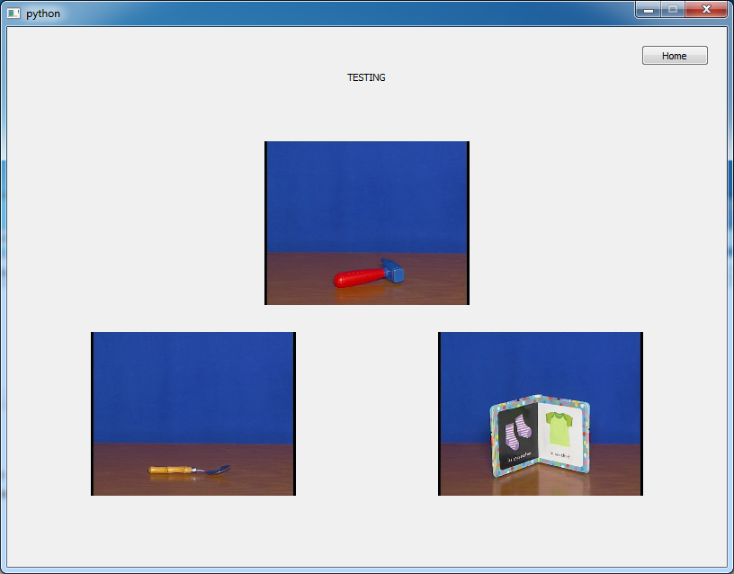

DanaSoft
lun. 04 octobre 2010 by Martin DeudonDanaSoft is a python interface based on PyQt4.

Installation
- If you are using Anaconda create a new environment with python's version 2.7 (in a terminal) :
shell
conda create -n danasoft_env python=2.7
activate danasoft_env
-
Manual install PyQt4 on this environment
-
Install numpy : conda install numpy
-
Download danasoft from github :
shell
git clone https://github.com/tinmarD/DanaSoft
Data Directory :
The data files are not provided on github to save space.
You need to set the data directory path in the config.py file at line 10 :
SOFT_NAME = "Dana Soft"
DATA_PATH = r'C:\Path\to\data\directory'
Install
- In the terminal, go in the root directory and run the following command :
python setup.py install
Launch
There are 2 solutions to launch the software :
- Open the file danasoft/danasoft.py with python
OR
- If step 5 was completed, you can open the software by calling danasoft in a terminal